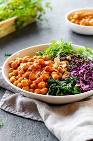

Moroccan Chickpea Bowl
Home

Description
This hearty vegetarian bowl features roasted cauliflower, chickpeas, and onions over spiced rice, topped with yogurt sauce and almonds.
A satisfying fusion of texture and flavor.
Ingredients
- 1 cup basmati rice
- ½ head cauliflower
- 1 can chickpeas
- 1 onion
- 3 tbsp olive oil
- Spices: garlic powder, coriander, cinnamon, cloves, ginger
- 1 cup coconut yogurt
- 1 garlic clove
- 1 cup cilantro
- ¾ cup pomegranate seeds
- ¼ cup almonds
- Salt
Steps
- Cook rice with spices.
- Roast cauliflower, onion, and chickpeas with oil and spices.
- Blend yogurt, garlic, and cilantro into sauce.
- Assemble bowl with rice, veggies, sauce, and toppings.
- Serve warm or chilled.